See what is on your clipboard.
WhatsClip shows the clipboard format by format and follows it as it changes. A format reads as a picture, as text in a chosen encoding, or as raw bytes.
Version 0.1.0 - free, zlib licence. Unpack and run; settings stay on your PC only when you allow it.
Dark mode
Light, dark, or as the system says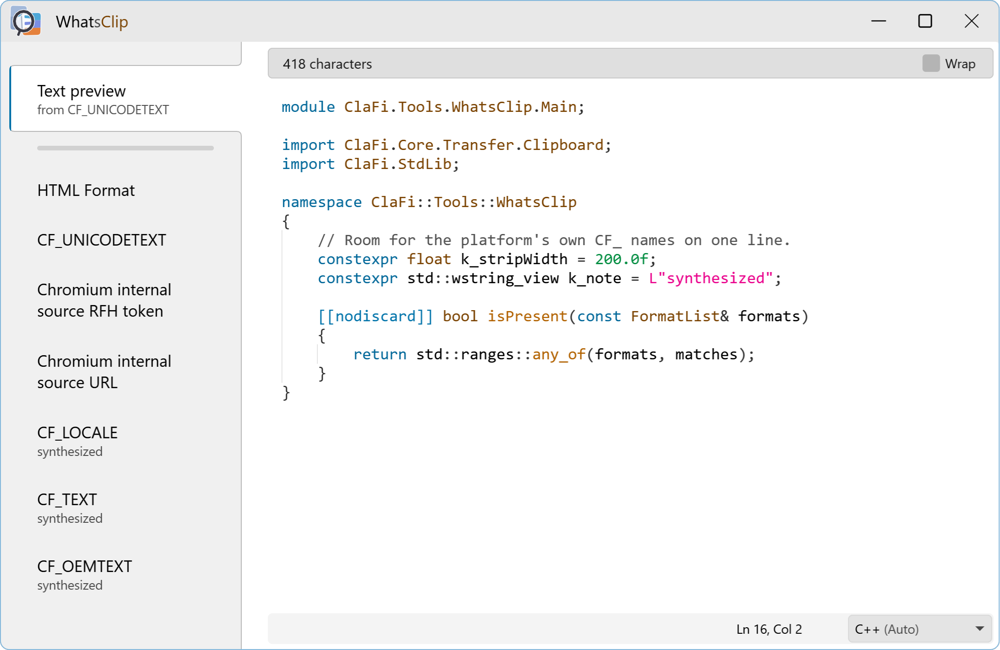
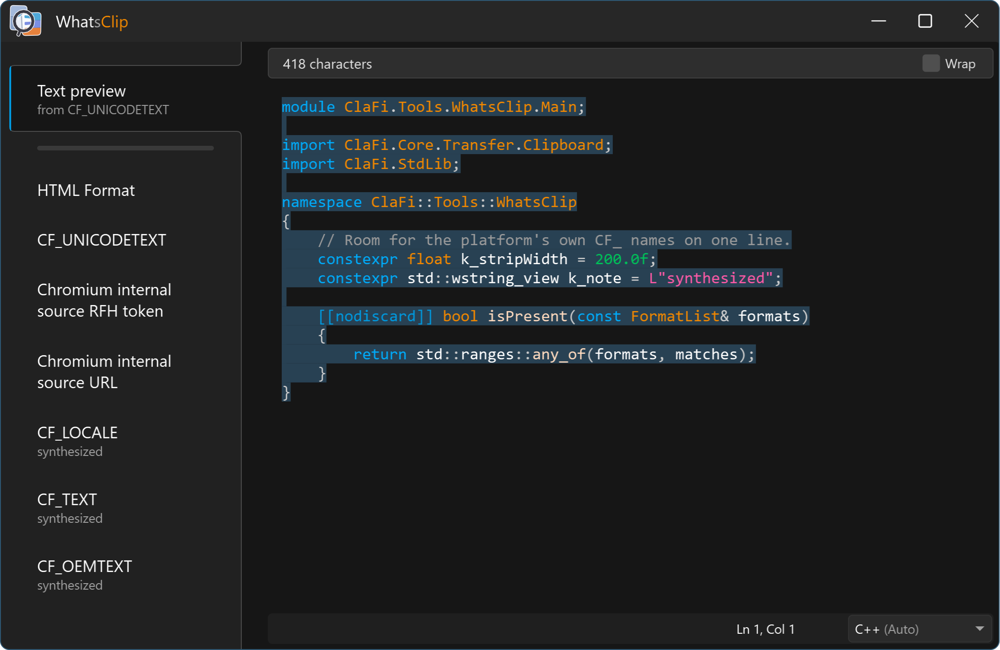
WhatsClip comes in light and dark. It follows the system until you pick one in Settings.
Any scale
To the size that suits you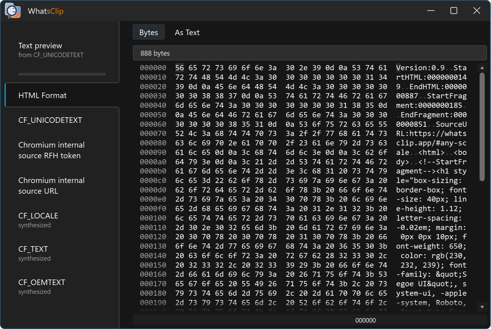
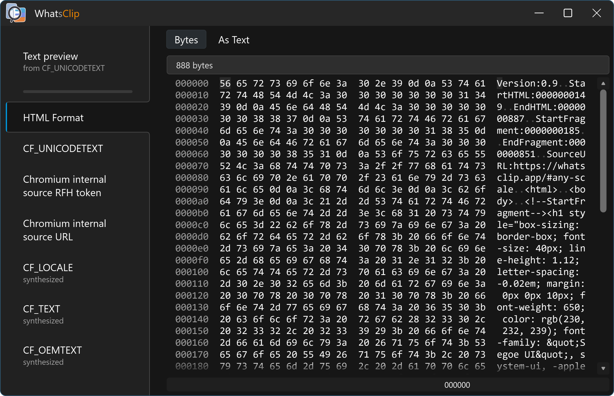
Scale the interface as you wish - text, icons and spacing grow together.
ClaFi themes
Wears the theme you choose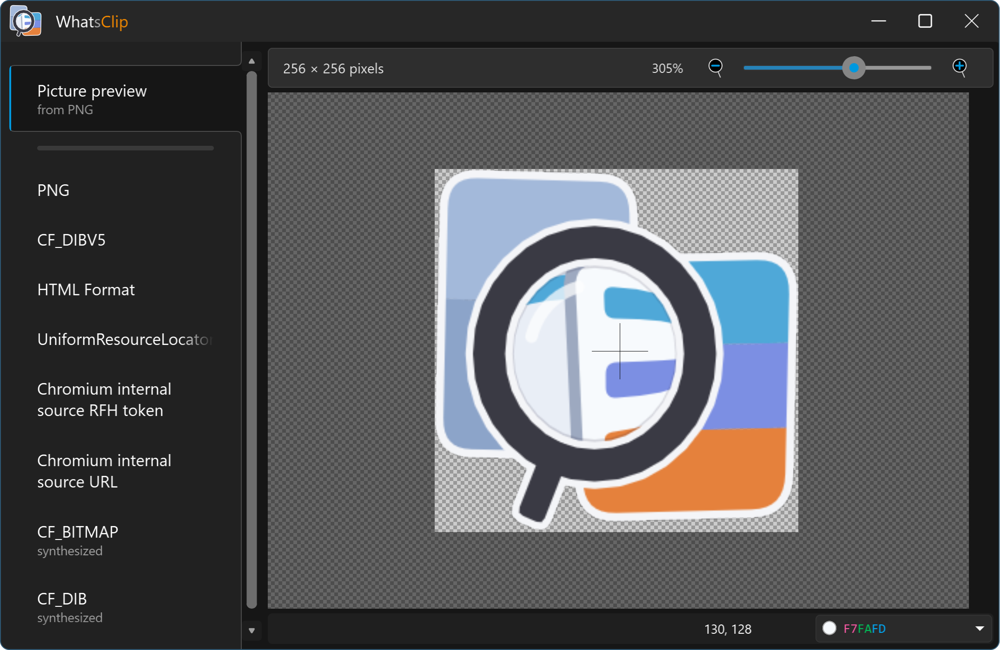
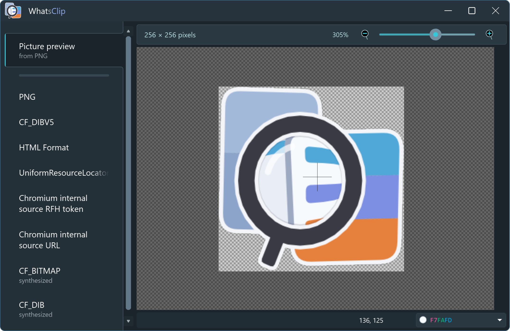
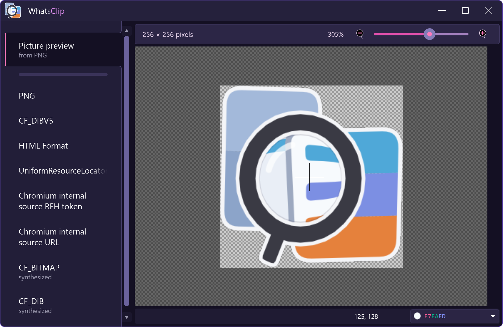
WhatsClip wears any ClaFi theme. Make your own in Themes.
Every format as text
In the encoding you choose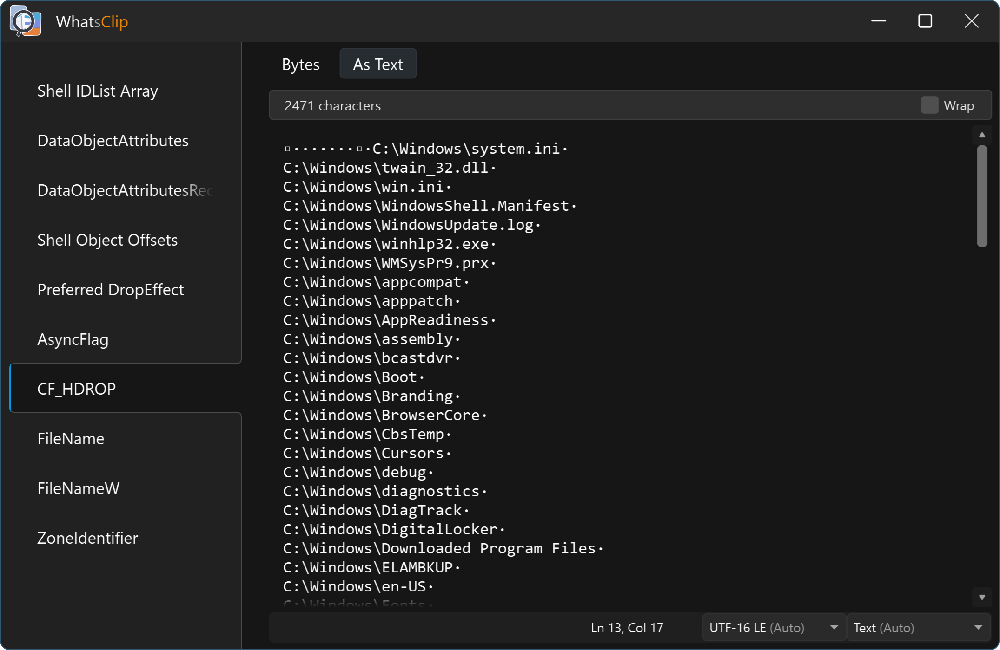
Any format on the clipboard can be read as text, in the encoding you choose - HTML fragments, RTF, the private formats of other applications.
Syntax highlighting
For the common languages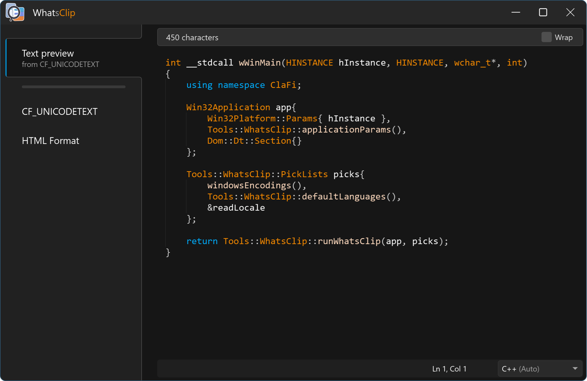
Code copied from an editor is coloured. The language is detected, and you can pick another.
Exotic languages
Shaped and drawn right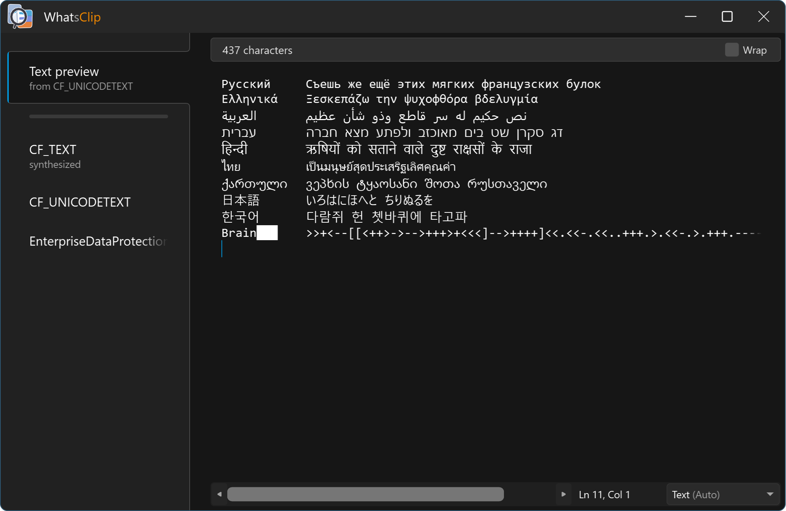
However exotic the language is, its text is shaped and drawn the way it is written.
Picture and text
Both previews, when both are there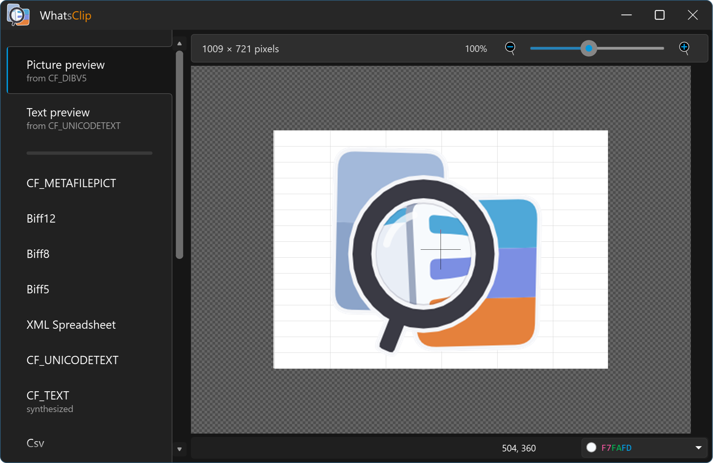
Copy a picture together with its text and WhatsClip previews both - the picture and the text, a tab each.
Pixel by pixel
Zoom in and read any pixel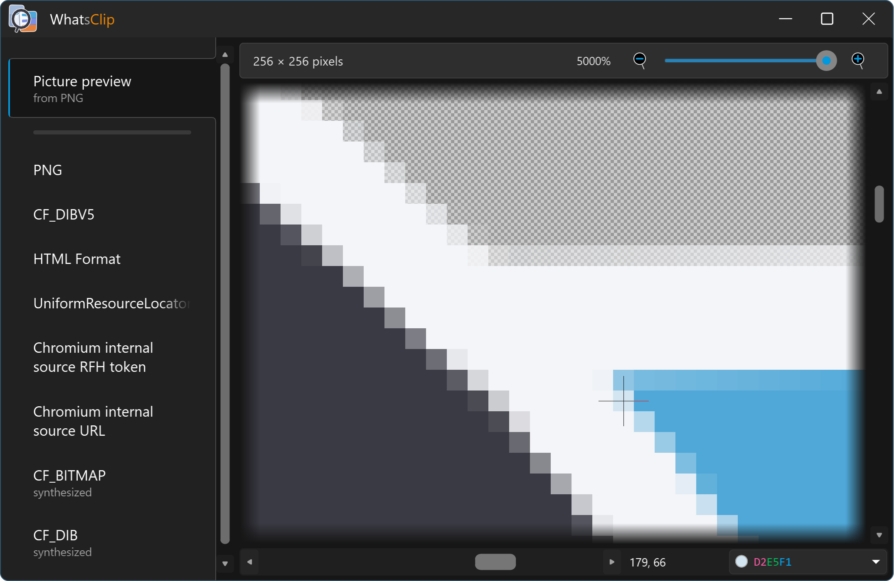
Zoom into a picture and point at a pixel to read its colour - as RGB hex, BGR hex, RGB decimal or CSS.
Alpha channel
Transparency read right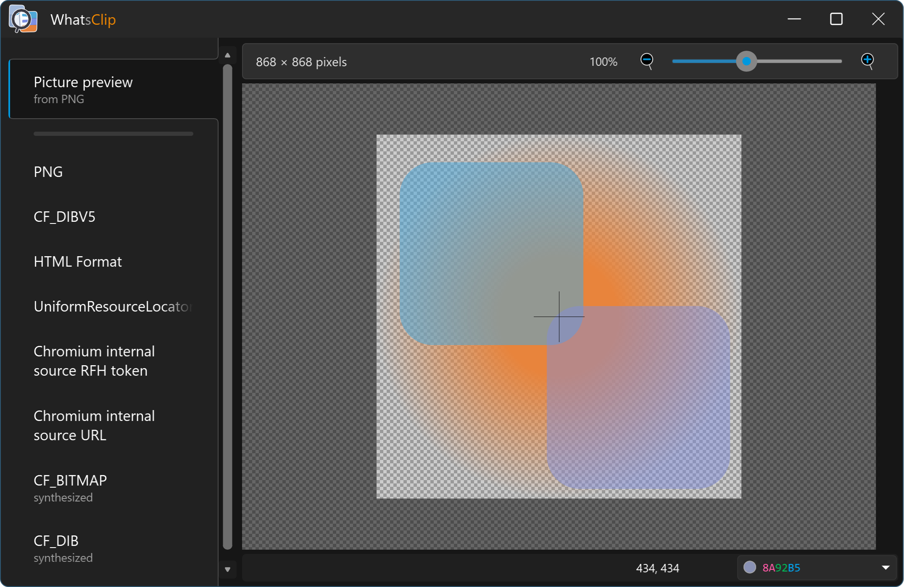
Pictures with an alpha channel keep their transparency.
Linux
A Wayland session, glibc 2.35 or newer, x86-64 with AVX2 and FMA. Supported distributions
DownloadWhatsClip-0.1.0-linux-x86_64.tar.gzVersion 0.1.0, released 2 October 2026 - release notes - check the download